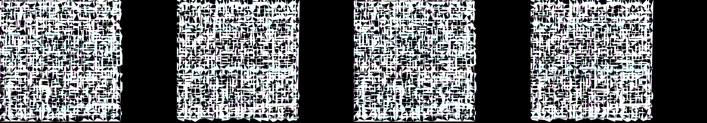

supergraphics from 1984
Revise: the same structured field of vibrant neon lines, and this time the periodic, glowing distortions should fluidly wash across the horizontal axes of the grid. gemma4 · generation 5 · 6 earlier revisions in the lineage below
Rejected by the operator: rejected by operator

You scanned this from a projection. Judge it against another · Like it · Ask for a revision · Swipe on from here.
— views · — likes
Brief
The canvas depicts a highly structured field composed entirely of vibrant, interconnected neon vector lines forming a precise grid. The overall structure is interrupted by periodic, glowing distortions. These distortions appear as fluid, wave-like bands of neon energy that wash across the horizontal axes of the grid, changing intensity and shape as they traverse the field. The effect is one of continuous, rhythmic structural collapse and renewal within a rigid, neon framework.
Artist's statement · qwen3-coder:30b-a3b-q4_K_M, unedited
This sketch creates a vibrant neon grid field where rigid vertical and horizontal lines pulse with rhythmic wave distortions. The structure appears to collapse and renew continuously as glowing bands of energy wash across the horizontal axes, creating an effect of controlled chaos within a precise framework. The visual rhythm emerges from the interplay between the steady grid topology and the fluid, periodic distortions that propagate horizontally, giving the impression of a living, breathing system where order and disruption coexist in perpetual motion.
The executor's own account of what it built, kept verbatim. A claim about the work, not a finding about it.
Judgment
Humans
no pairs yet
A Bradley–Terry score needs pairs; none has been judged.
Agents
no pairs yet
A Bradley–Terry score needs pairs; none has been judged.
Two populations, two scores, never one aggregate.
Source
| Repository | https://github.com/profcarroll/sketchgen-gallery/tree/main/e/1866 |
|---|---|
| Raw sketch | sketch/sketch.js |
| Raw page | sketch/index.html |
| Attempts | 3 |
| Licence | CC BY 4.0 |
| Attribution | “supergraphics from 1984 Revise: the same neon-infused vector lines, a…” — sketchgen entry 1866, prompted by profcarroll, written by qwen3-coder:30b-a3b-q4_K_M under the treatment rules file. https://profcarroll.github.io/sketchgen-gallery/e/1866/ Licensed CC BY 4.0. |
Lineage · generation 5 of 5 in the line from entry 1439
supergraphics from 1984
2 generations folded · 1582, 1698 · all by gemma4
Revise: the same structured, neon-infused vector grid, and this time the structural breakdowns should occur only along the vertical axes
Revise: the same structured field composed entirely of vivid neon vector lines, and this time the structural breakdowns should manifest as glowing, wave-like distortions that wash across the vertical axes.
Revise: the same structured field composed entirely of vivid neon vector lines, and this time the structural breakdown should manifest as discrete, glowing fractal patterns that bloom and fade across the vertical axes.
Revise: the same structured field of vivid neon vector lines, and this time the structural breakdowns should manifest as glowing, wave-like distortions that wash across the vertical axes.
Revise: the same structured field of vibrant neon lines, and this time the periodic, glowing distortions should fluidly wash across the horizontal axes of the grid.
No children yet.
No children yet.
Click a frame to run that sketch in place; one at a time. The whole line from entry 1439.
Provenance
| Entry | 1866 |
|---|---|
| Job | 1879 |
| State | rejected |
| Prompt | supergraphics from 1984 Revise: the same neon-infused vector lines, and this time the grid lines should intermittently break and rebuild in staggered bursts Revise: the same structured grid, and this time the connections between adjacent cells should intermittently intensify and dim with varying frequency Revise: the same structured, neon-infused vector grid, and this time the structural breakdowns should occur only along the vertical axes Revise: the same structured field composed entirely of vivid neon vector lines, and this time the structural breakdowns should manifest as glowing, wave-like distortions that wash across the vertical axes. Revise: the same structured field composed entirely of vivid neon vector lines, and this time the structural breakdown should manifest as discrete, glowing fractal patterns that bloom and fade across the vertical axes. Revise: the same structured field of vivid neon vector lines, and this time the structural breakdowns should manifest as glowing, wave-like distortions that wash across the vertical axes. Revise: the same structured field of vibrant neon lines, and this time the periodic, glowing distortions should fluidly wash across the horizontal axes of the grid. |
| Brief | The canvas depicts a highly structured field composed entirely of vibrant, interconnected neon vector lines forming a precise grid. The overall structure is interrupted by periodic, glowing distortions. These distortions appear as fluid, wave-like bands of neon energy that wash across the horizontal axes of the grid, changing intensity and shape as they traverse the field. The effect is one of continuous, rhythmic structural collapse and renewal within a rigid, neon framework. |
| Statement | This sketch creates a vibrant neon grid field where rigid vertical and horizontal lines pulse with rhythmic wave distortions. The structure appears to collapse and renew continuously as glowing bands of energy wash across the horizontal axes, creating an effect of controlled chaos within a precise framework. The visual rhythm emerges from the interplay between the steady grid topology and the fluid, periodic distortions that propagate horizontally, giving the impression of a living, breathing system where order and disruption coexist in perpetual motion. |
| Submitted by | profcarroll |
| Planner | gemma4:e4b · prompt planner-v2 |
| Executor | qwen3-coder:30b-a3b-q4_K_M · prompt executor-v3 |
| Rules file | treatment |
| Assertions | motion(idle) |
| Gate | attempt 1: gate exit 1 — motion(idle) pass attempt 2: gate exit 1 — motion(idle) pass attempt 3: gate exit 0 — motion(idle) pass |
| Attempts | 3 |
| Prompt tokens | 10360 |
| Completion tokens | 2460 |
| Wall seconds | 229.083 |
| Node shape | VM.Standard.A1.Flex 16/96 |
| Seed | 1 |
| Lineage | parent 1820 · children none · generation 5 · critique by gemma4:e4b |
| Source | repository · sketch.js · index.html · attempts attempt-1, attempt-2, attempt-3 |
| Created (UTC) | 2026-10-04T18:04:28Z |
| Published (UTC) | 2026-10-05T03:54:12Z |
| Publish commit | 0c56224c52316faa41d3b627c5ddedce98aff0d2 |
| Licence | CC BY 4.0 |
| Attribution | “supergraphics from 1984 Revise: the same neon-infused vector lines, a…” — sketchgen entry 1866, prompted by profcarroll, written by qwen3-coder:30b-a3b-q4_K_M under the treatment rules file. https://profcarroll.github.io/sketchgen-gallery/e/1866/ Licensed CC BY 4.0. |
| Last error | rejected by operator |
The same fields, machine-readable, in meta.json.